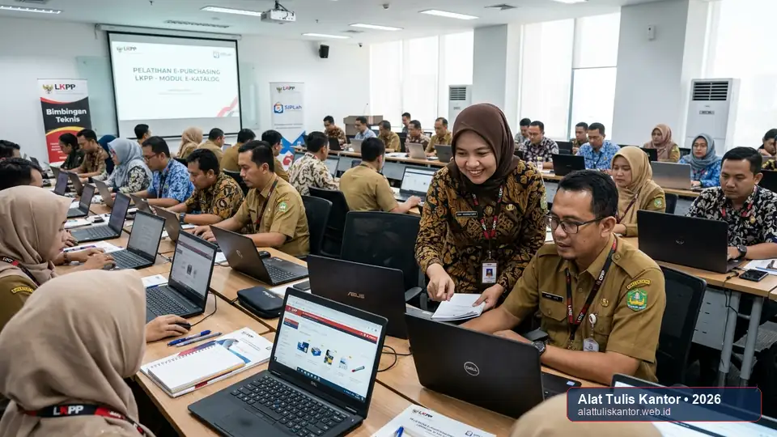

Proses e-purchasing LKPP yang lambat dan berbelit di banyak instansi pemerintah pusat sering kali bukan disebabkan oleh keterbatasan sistem itu sendiri, melainkan oleh resistensi dan kurangnya kesiapan staf dalam beradaptasi dengan alur kerja digital yang baru. Implementasi sistem e-procurement ATK yang sukses membutuhkan lebih dari sekadar pelatihan teknis penggunaan aplikasi, tetapi juga strategi change management yang menyeluruh untuk mengubah kebiasaan kerja lama yang sudah mengakar.
Artikel ini membahas strategi change management untuk mempercepat adopsi sistem e-procurement ATK dalam ekosistem pengadaan ATK LPSE di instansi pemerintah pusat, sehingga proses e-purchasing dapat berjalan lebih efisien tanpa hambatan resistensi internal. ATK Prima Distribusi, sebagai penyedia berpengalaman melayani instansi pusat, siap mendukung transisi digital pengadaan Anda melalui WhatsApp di 088989643555.
Kunci Transformasi Digital Pemerintah: Keberhasilan migrasi pengadaan barang/jasa pemerintah ke ranah elektronik 80% ditentukan oleh kesiapan budaya kerja dan manajemen perubahan aparatur, bukan sekadar infrastruktur aplikasi sistem informasi.
Ringkasan Strategi Change Management Implementasi E-Procurement
Strategi change management yang efektif untuk implementasi e-procurement ATK di instansi pusat mencakup empat elemen: (1) sosialisasi manfaat konkret sistem baru kepada seluruh pejabat pengadaan sebelum implementasi dimulai, (2) penunjukan champion internal di setiap unit kerja sebagai rujukan awal bagi rekan kerja yang mengalami kendala, (3) pelatihan bertahap dimulai dari fitur dasar sebelum masuk ke fitur lanjutan, dan (4) evaluasi berkala dengan mekanisme umpan balik terbuka agar kendala yang muncul dapat segera diperbaiki.
Instansi yang menerapkan keempat elemen ini secara konsisten umumnya mengalami masa transisi yang jauh lebih singkat dibanding instansi yang hanya mengandalkan pelatihan teknis satu kali tanpa pendampingan berkelanjutan, sebagaimana telah terbukti dalam optimalisasi alur transaksi ATK e-katalog instansi pemerintah.
Mengapa Resistensi Internal Sering Menjadi Hambatan Utama
Staf yang sudah terbiasa dengan proses pengadaan konvensional selama bertahun-tahun sering kali merasa proses digital baru justru menambah beban kerja di awal, meskipun pada akhirnya sistem tersebut dirancang untuk mempercepat proses secara keseluruhan. Ketakutan akan kompleksitas entri data, kekhawatiran melakukan kesalahan administrasi pada sistem terbuka LKPP, serta hilangnya rasa nyaman terhadap prosedur kertas manual menjadi pemicu utama keengganan beralih.
Tanpa pendekatan change management pengadaan yang tepat, resistensi ini dapat memperlambat adopsi sistem secara drastis, menurunkan motivasi kerja, bahkan berpotensi membuat staf kembali ke kebiasaan lama (workaround non-digital) begitu tekanan implementasi pimpinan mereda. Oleh sebab itu, kepemimpinan transformasional dan strategi komunikasi dua arah menjadi pilar krusial dalam menyukseskan transformasi digital pemerintah.
4 Elemen Strategi Change Management untuk Adopsi E-Procurement
1. Sosialisasi Manfaat Konkret Sebelum Implementasi
Jelaskan manfaat nyata sistem e-procurement kepada seluruh pejabat pengadaan, Pejabat Pembuat Komitmen (PPK), dan staf General Affair sebelum sistem diberlakukan. Manfaat tersebut meliputi pengurangan waktu proses transaksi pengadaan rutin, transparansi harga yang lebih baik sesuai standar pasar, kepastian stok barang dari vendor resmi, dan kemudahan rekam jejak dokumentasi digital untuk keperluan audit BPK atau Inspektorat. Sosialisasi yang dilakukan di awal membantu membangun penerimaan psikologis sebelum resistensi sempat terbentuk.
2. Penunjukan Champion Internal di Setiap Unit Kerja
Tunjuk satu atau dua staf di setiap unit kerja yang memiliki kemampuan adaptasi teknologi cepat sebagai change champion. Champion ini bertindak sebagai figur pendamping dan rujukan awal bagi rekan kerja yang mengalami kendala teknis atau keraguan alur aplikasi. Hal ini memastikan permasalahan harian dapat diselesaikan secara cepat tanpa harus selalu menunggu antrean tiket bantuan tim IT pusat.

3. Pelatihan Bertahap dari Fitur Dasar
Rancang kurikulum pelatihan pejabat pengadaan secara modular dan bertahap. Mulai pelatihan dari fitur paling dasar seperti pencarian katalog produk ATK, pembuatan keranjang belanja, dan proses negosiasi harga sederhana, sebelum melanjutkan ke modul lanjutan seperti manajemen kontrak elektronik, pelaporan realisasi otomatis, atau integrasi dengan sistem informasi keuangan daerah/pusat (SIPD/SPAN). Pendekatan bertahap ini mengurangi kesan kewalahan (cognitive overload) yang sering dialami staf saat dihadapkan pada sistem baru sekaligus.
4. Evaluasi Berkala dengan Umpan Balik Terbuka
Jadwalkan sesi evaluasi rutin, misalnya setiap bulan pada tiga bulan pertama implementasi, untuk mengumpulkan kendala yang dihadapi staf secara langsung dan mencari solusi bersama. Diskusi dua arah ini membuktikan bahwa manajemen mendengarkan aspirasi pengguna, alih-alih membiarkan friksi-friksi teknis kecil menumpuk hingga menjadi hambatan struktural besar terhadap kelancaran adopsi sistem e-procurement instansi.
Tabel Timeline Implementasi Change Management yang Direkomendasikan
Berikut adalah matriks pentahapan strategi manajemen perubahan yang disarankan untuk unit kerja instansi kementerian dan lembaga pemerintah:
| Periode | Fokus Kegiatan | Target Capaian |
|---|---|---|
| Minggu 1-2 | Sosialisasi manfaat konkret & penunjukan champion internal unit kerja | Pemahaman dasar & kesiapan mental seluruh staf administrasi |
| Minggu 3-6 | Pelatihan bertahap fitur dasar (katalog, keranjang, mini-kompetisi/negosiasi) | Staf mampu melakukan transaksi rutin sederhana secara mandiri |
| Bulan 2-3 | Pelatihan fitur lanjutan, pelaporan analitik & sesi evaluasi rutin berkala | Adopsi penuh 100% digital tanpa kembali ke metode manual |
Studi Kasus: Percepatan Adopsi di Kementerian X
Sebuah unit kerja eselon I di salah satu kementerian pusat sebelumnya mengalami tingkat adopsi e-procurement yang sangat rendah, dengan sebagian besar staf masih memilih metode konvensional berbasis nota fisik meskipun sistem digital LKPP sudah tersedia lebih dari setahun.
Setelah menerapkan strategi change management dengan penunjukan champion internal di setiap biro serta sosialisasi manfaat yang lebih terstruktur dan berkesinambungan, tingkat adopsi sistem melonjak dari sekitar 30 persen menjadi lebih dari 85 persen total transaksi pengadaan dalam waktu tiga bulan. Peningkatan ini disertai dengan penurunan rata-rata waktu penyelesaian transaksi pengadaan ATK hingga 45%, akurasi pembukuan inventaris yang meningkat tajam, serta eliminasi total terhadap potensi ketidaksesuaian dokumen pertanggungjawaban fisik.
Hasil Transformasi Nyata: Pendampingan berkelanjutan melalui champion internal terbukti 3x lebih efektif meningkatkan adopsi sistem digital dibanding metode instruksi formal satu arah tanpa ruang konsultasi.
Cara Memulai Transisi E-Procurement dengan Dukungan Penyedia Berpengalaman
Untuk mempelajari layanan pengadaan ATK yang mendukung transisi digital instansi pusat dan pemenuhan sertifikasi legalitas, Anda dapat mengunjungi halaman tender ATK LPSE serta memeriksa kepatuhan merk ATK TKDN tinggi untuk LKPP kami.
Anda juga dapat mengenal profil legalitas dan rekam jejak perusahaan kami melalui halaman tentang kami sebagai bagian dari evaluasi mitra pengadaan terpercaya, atau menjelajahi katalog paket ATK instansi dan seluruh produk alat tulis kantor lengkap dengan penawaran harga resmi.
Pertanyaan yang Sering Diajukan (FAQ)
Kesimpulan
Proses e-purchasing yang lambat dan berbelit di instansi pemerintah pusat sering kali dapat diatasi bukan dengan mengganti sistem aplikasi, melainkan dengan menerapkan strategi change management yang tepat untuk mempercepat kesiapan dan adopsi staf terhadap sistem yang sudah tersedia. Dengan sosialisasi manfaat konkret, penunjukan champion internal, pelatihan bertahap dari fitur dasar, dan evaluasi berkala, transisi menuju ekosistem e-procurement dapat berjalan jauh lebih lancar, transparan, dan cepat.
Butuh dukungan penyedia ATK resmi yang memahami kebutuhan transisi digital dan regulasi pengadaan instansi Anda? Hubungi tim ATK Prima Distribusi via WhatsApp di 088989643555 atau kunjungi halaman kontak kami untuk konsultasi pengadaan barang/jasa instansi pemerintah terpercaya.